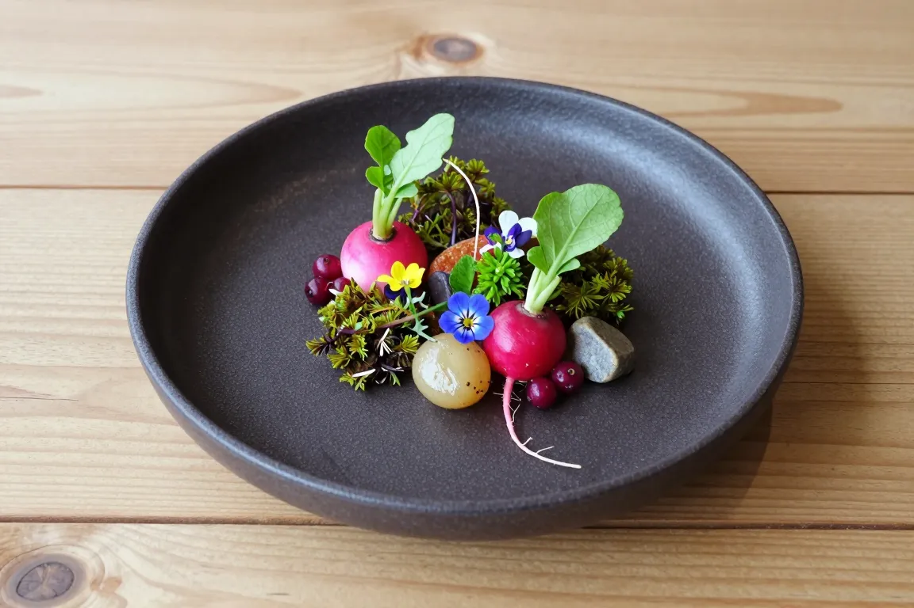

cuisine · 2004–present · also: New Nordic, Nordic cuisine, Ny nordisk mad
A tasting-menu kitchen that cooks only what grows, swims or is foraged in the Nordic region, in the season of the day. Twelve chefs signed the Manifesto for the New Nordic Kitchen in 2004. Vinegar, ferments and wild plants replace lemon and olive oil.

Core thesis
A kitchen of one place and one season: the cold, the short summer and the long winter of the North set the menu, and the cook preserves the summer for the winter.
Design principles
Use only produce of the Nordic region; replace lemon with vinegar, sorrel or fermented juice, and olive oil with butter or cold-pressed rapeseed oil.
Forage wild plants, berries, mushrooms and shellfish, and change the menu with the season.
Preserve the summer: pickle, salt, smoke, dry and ferment, so that a winter menu tastes of the summer.
Cook on wood and embers, and keep the taste of smoke and char.
Show the ingredient as it grew: a whole radish, a leaf, a shell, on a plate of stone, wood or hand-made ceramic.
Serve many small courses, some eaten by hand, in a room of wood and daylight.
Keep a research kitchen for fermentation; a new garum, koji or vinegar is part of the menu.
Anti-patterns
Lemon, olive oil and other imported staples
Foie gras, caviar or other luxury goods for their price
A cream or butter sauce that covers the ingredient
The same menu all the year
Laboratory gels and foams as the point of the dish